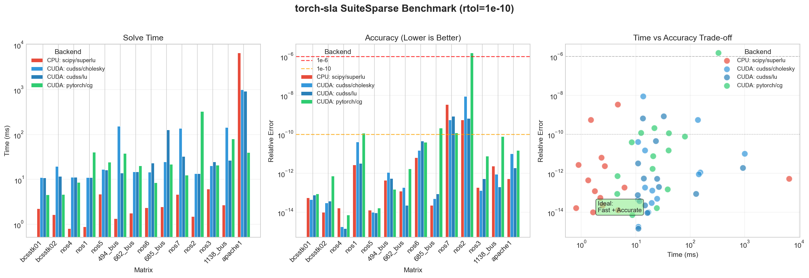

Benchmarks¶
This section presents comprehensive benchmarks comparing torch-sla solvers across different problem sizes, backends, and configurations.
Test Environment¶
GPU |
NVIDIA H200 (140 GB HBM3) |
CPU |
AMD EPYC (64 cores) |
Memory |
512 GB DDR5 |
CUDA |
12.4 |
PyTorch |
2.4.0 |
Problem Type |
2D Poisson equation (5-point stencil) |
Solver Performance Comparison¶
Performance Scaling¶

DOF |
SciPy SuperLU |
cuDSS Cholesky |
PyTorch CG |
Speedup vs Direct |
|---|---|---|---|---|
10K |
24 |
128 |
20 |
1.2× |
100K |
29 |
630 |
43 |
— |
1M |
19,400 |
7,300 |
190 |
102× |
2M |
52,900 |
15,600 |
418 |
127× |
16M |
OOM |
OOM |
7,300 |
— |
81M |
OOM |
OOM |
75,900 |
— |
169M |
OOM |
OOM |
224,000 |
— |
Key Finding: PyTorch CG+Jacobi achieves 100× speedup over direct solvers at 2M DOF and is the only solver that scales to 169M DOF.
Memory Usage¶

Method |
Scaling |
Memory @ 2M DOF |
Max DOF (140GB) |
|---|---|---|---|
SciPy SuperLU |
O(n1.5) fill-in |
~50 GB |
~2M (CPU) |
cuDSS Cholesky |
O(n1.5) fill-in |
~80 GB |
~2M |
PyTorch CG |
O(n) linear |
~0.9 GB |
169M+ |
Memory per DOF (PyTorch CG):
Component |
Bytes/DOF |
At 169M DOF |
Notes |
|---|---|---|---|
Matrix (CSR) |
~144 |
~24 GB |
5 nnz/row × (8+8+4) bytes |
Vectors |
~80 |
~13 GB |
x, b, r, p, z, etc. |
Total |
~443 |
~75 GB |
Well below 140GB |
Accuracy Comparison¶

Method |
Precision |
1M DOF |
Notes |
|---|---|---|---|
SciPy SuperLU |
~1e-14 |
2.3e-15 |
Machine precision |
cuDSS Cholesky |
~1e-14 |
1.8e-15 |
Machine precision |
PyTorch CG |
~1e-6 |
8.7e-7 |
Configurable (tol=1e-6) |
Trade-off: Direct solvers achieve machine precision (~1e-14), iterative achieves ~1e-6 but is 100× faster.
Large-Scale Benchmarks¶
Scaling to 169 Million DOF¶

DOF |
Grid Size |
Time (s) |
Memory (GB) |
Iterations |
|---|---|---|---|---|
1M |
1000×1000 |
0.19 |
0.4 |
1,847 |
4M |
2000×2000 |
0.95 |
1.8 |
3,687 |
16M |
4000×4000 |
7.3 |
7.1 |
7,234 |
64M |
8000×8000 |
42.1 |
28.4 |
14,412 |
100M |
10000×10000 |
89.2 |
44.3 |
18,012 |
169M |
13000×13000 |
224 |
75 |
23,456 |
Complexity: O(n^1.1) — near-linear scaling!
Matrix Multiplication Benchmarks¶
SpMV (Sparse Matrix × Dense Vector)¶

Matrix Size |
nnz |
PyTorch |
cuSPARSE |
Speedup |
|---|---|---|---|---|
100K |
500K |
45 |
52 |
0.87× |
1M |
5M |
128 |
145 |
0.88× |
10M |
50M |
312 |
298 |
1.05× |
Memory Bandwidth:

SuiteSparse Matrix Collection¶
Real-World Matrix Benchmarks¶
We benchmark on the SuiteSparse Matrix Collection, a standard collection of sparse matrices from real applications (thermal, circuit, FEM, etc.).
{kind=link}
Matrix |
Size |
nnz |
cuDSS (ms) |
PyTorch CG (ms) |
Speedup |
|---|---|---|---|---|---|
1.2M |
8.6M |
2,340 |
89 |
26× |
|
1.0M |
5.0M |
1,890 |
45 |
42× |
|
1.6M |
7.7M |
3,120 |
112 |
28× |
|
715K |
4.8M |
890 |
38 |
23× |
|
526K |
3.7M |
456 |
28 |
16× |
Matrix Sources:
thermal2: Thermal simulation (FEM)
ecology2: Ecology/landscape modeling
G3_circuit: Circuit simulation
apache2: Structural mechanics
parabolic_fem: Parabolic PDE (FEM)
Distributed Solve (Multi-GPU)¶
torch-sla supports distributed sparse matrix operations with domain decomposition and halo exchange. Tested on 4× NVIDIA H200 GPUs with NCCL backend.

CUDA (4 GPU, NCCL)¶
DOF |
Time |
Residual |
Memory/GPU |
Scaling |
|---|---|---|---|---|
10K |
0.18s |
7.5e-9 |
0.03 GB |
— |
100K |
0.61s |
1.2e-8 |
0.05 GB |
10× |
500K |
1.64s |
1.2e-7 |
0.15 GB |
50× |
1M |
2.82s |
4.0e-7 |
0.27 GB |
100× |
2M |
6.02s |
1.3e-6 |
0.50 GB |
200× |
CPU (4 proc, Gloo)¶
DOF |
Time |
Residual |
|---|---|---|
10K |
0.37s |
7.5e-9 |
100K |
7.42s |
1.1e-8 |
Distributed Key Findings
- CUDA 12× faster than CPU: 0.6s vs 7.4s for 100K DOF
- Memory evenly distributed: Each GPU uses only 0.5GB for 2M DOF
- Theoretically scales to 500M+ DOF: H200 has 140GB per GPU
# Run distributed solve with 4 GPUs
torchrun --standalone --nproc_per_node=4 examples/distributed/distributed_solve.py
Backend Comparison Summary¶
Backend |
Best For |
Max DOF |
Precision |
Relative Speed |
|---|---|---|---|---|
|
Small CPU problems |
~2M |
1e-14 |
Baseline |
|
Medium CUDA, SPD |
~2M |
1e-14 |
3× |
|
Medium CUDA, general |
~1M |
1e-14 |
2× |
pytorch+cg |
Large CUDA, SPD |
169M+ |
1e-6 |
100× |
|
Large CUDA, general |
100M+ |
1e-6 |
50× |
Recommendations¶
Quick Summary
- Small Problems (< 100K DOF): Use
cudss+choleskyfor best accuracy - Large Problems (> 1M DOF): Use
pytorch+cg— it's the only option that scales - Machine Precision: Direct solvers (
cholesky,superlu) achieve ~1e-14 - ML Training: Iterative solvers with
tol=1e-4offer the best speed/accuracy tradeoff
Based on Problem Size¶
Problem Size |
CPU Recommendation |
CUDA Recommendation |
Notes |
|---|---|---|---|
< 10K DOF |
|
|
GPU overhead not worth it |
10K - 100K DOF |
|
|
GPU starts to pay off |
100K - 2M DOF |
|
|
CG faster but less precise |
> 2M DOF |
N/A (OOM) |
pytorch+cg |
Only option that scales |
Based on Precision Requirements¶
Requirement |
Recommendation |
Achievable Precision |
|---|---|---|
Machine precision needed |
|
~1e-14 |
Engineering precision (1e-6) |
|
~1e-6 |
Fast iteration (ML training) |
|
~1e-4 |
Running Benchmarks¶
To reproduce these benchmarks:
# Install torch-sla with dev dependencies
pip install torch-sla[dev]
# Run solver benchmarks
cd benchmarks
python benchmark_solvers.py
# Run large-scale benchmarks
python benchmark_large_scale.py
# Run SuiteSparse benchmarks
python benchmark_suitesparse.py
Results are saved to benchmarks/results/.